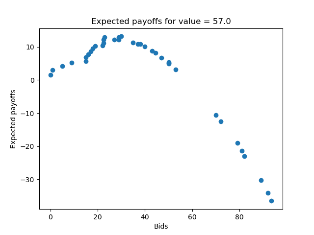

Economic Petri Dish

When businesses that use different currencies negotiate contracts with one another, they often have to agree upon a fixed, nominal
price for the goods being traded. But, since exchange rates are somewhat volatile, this may result in one firm not being able to
uphold their end of the deal further down the line, resulting in the need for a costly contract re-negotiation. The economic petri
dish is an agent-based model that seeks to examine a potential solution to this problem: index-based pricing. Click on the tile to
learn.
Optimal Auction Strategies

Say you are in an auction. You know what kind of auction you're participating in (be it first price, second price etc), you know how
many people you're bidding against, and you know what you value the the item at. You don't know what others' values are, only that
they are probably uniformly distributed over some range. What should you bid? This project attempts to answer that question using some
economic/statistical theory and simulations. Click the tile to learn more.